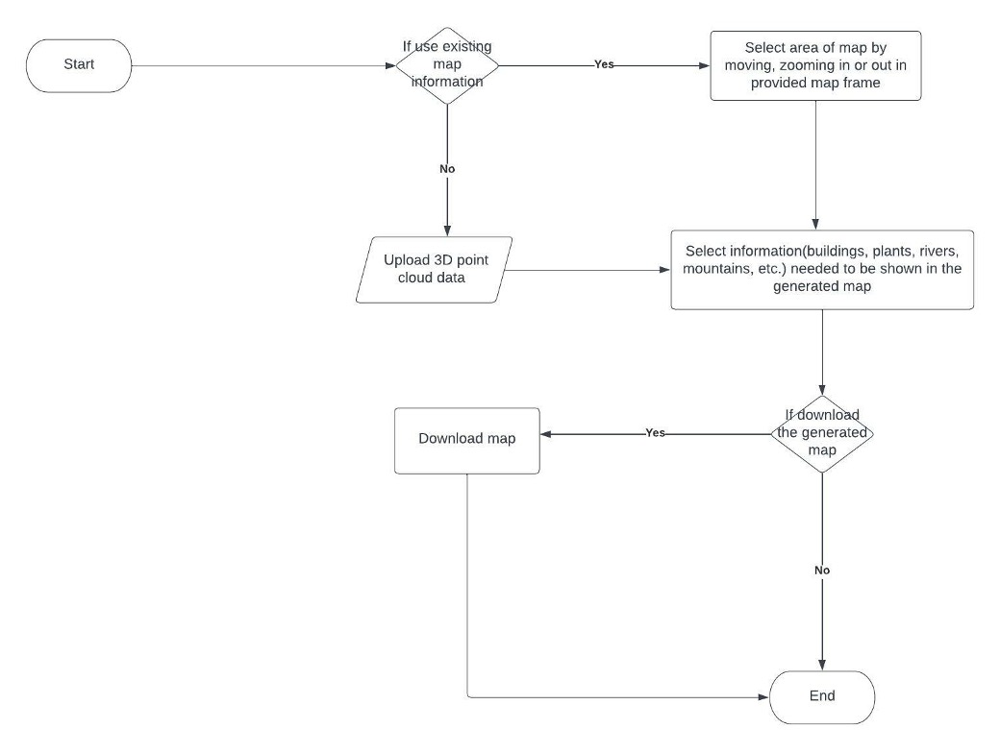

Project Update - Week 1
User Stories; UX Flowchart; Meeting Artefacts; Timeline
This page summarizes the group activities and project progress in Week 1 (October 2 - October 8)
Meister Task Update

User Story
As an urban planner, I want to have a 3D view of the city, including features like roads, parks, buildings, etc. So I can make better decisions on city planning. After uploading the Lidar point cloud, a 3D rendering will be generated in the user interface. It supports basic functionalities like click and drag, zoom in and zoom out, so I can use it to show my design idea.
As an architect, I want to access various kinds of information when I crop a certain area of land. The information includes building coverage ratio, residential density, and afforested area. With the help of terrestrial equipment, I can also have a view of infrastructure and population, so that I can make a more elaborate analysis on site research and present more convincing data for my project.
As a civil engineer, I want regional distribution and topographic maps to help me with road planning. In the map, I need the distribution of existing buildings and roads. Also, the areas of farmlands, rivers and forests are also important. Besides these, I need the map of topography including altitude information to help me design.
First Meeting with Shareholders
- Meeting Time: October 7, 2022, Friday, 09:00 - 10:00
- Meeting Method: Online via Zoom Meeting
- Topic: Which direction shall we choose for the project
- Question: Are there any resources we can get access to?
- Answer: To get a dataset to start with, we can check SensatUrban https://paperswithcode.com/dataset/sensaturban , https://github.com/QingyongHu/SensatUrban . For the point cloud data of Vancouver, we can check https://opendata.vancouver.ca/explore/dataset/lidar-2018/information/ , and https://github.com/macdonaldezra/ml-hpc-demo.
UX Flowchart
This flowchart shows the user experience of an urban planner, as described in User Story 1.
Project Timeline
- Week 1: 10/02 - 10/08
- Brainstorm, look into resources and decide the topic of the project
- Week 2: 10/09 - 10/15
- Get point cloud data from an open source website (i.e. City of Vancouver)
- Week 3: 10/16 - 10/22
- Perform semantic segmentation of Lidar las file.
- Week 4: 10/23 - 10/29
- Perform semantic segmentation of Lidar las file. Use an open-source ML library to increase the accuracy of our segmentation.
- Week 5: 10/30 - 11/05
- Make improvement based on stakeholders’ feedback
- Week 6: 11/06 - 11/12
- Build front end applications to visualize the point cloud. (Cesium JS)
- Week 7: 11/13 - 11/19
- Build front end applications to visualize the point cloud.
- Week 8: 11/20 - 11/26
- Check accuracy of our visualization
- Week 9: 11/27 - 12/03
- Test our API using another Lidar point cloud data.
- Week 10: 12/04 - 12/10
- Prepare demo package and final deliverables
- Presentation: 12/12